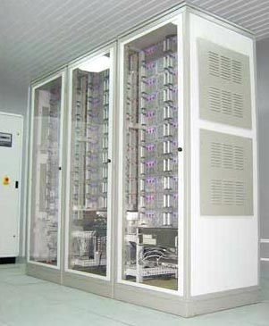
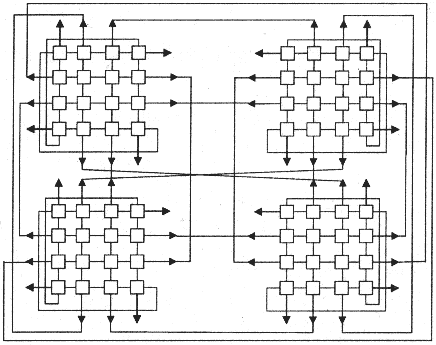

производитель TI
годы выпуска 1973
тип по Флинну SIMD
класс супер ЭВМ
вид архитектуры векторная конвейерная
пиковая производительность 50 MFLOPS (при четырех конвейерах )
Машина [Хокни] создавалась в 1966-1973 годы, основное назначение - обработка сейсмических данных. Эффективно выполняла Фурье преобразование. Имела от одного до четырех одинаковых универсальных конвейера. Было построено только семь машин. Производительность на скалярных операциях была ниже, чем у современных последовательных конвейерных ВС.
производитель Los Alamos National Laboratory
годы выпуска 1998
стоимость 313 тыс. долларов
тип по Флинну MIMD
класс кластер
число процессоров 140
процессор Alpha 533МГц
производительность по LINPACK 47.7 GFLOPS
Узлы кластера - рабочие станции с процессором Alpha под управлением ОС Linux. Система оказалась в несколько раз дешевле аналогичных по производительности MPP систем.
производитель Burroughs
годы выпуска 1964
тип по Флинну MIMD
вид архитектуры SMP
B5500- первая ЭВМ третьего поколения, а также первая ВС с архитектурой SMP. Также это одна из первых серийных машин с аппаратной реализацией стека для вычислений и аппаратной реализацией виртуальной памяти.
производитель IBM
годы выпуска 2004
тип по Флинну MIMD
класс супер ЭВМ
вид архитектуры MPP
число узлов 65536
число процессоров в узле 2
объем ОЗУ 32768 Гб
пиковая производительность 360 TFLOPS
Blue Gene/L с 2004 года первую позицию в списке Top500 [top500]. Компьютер состоит из 65536 двухпроцессорных рабочих узлов, . Узлы соединены в сеть с топологией трехмерного тора. Кроме основной сети есть две вспомогательное - для глобальных пересылок и для ввода/вывода. Каждый узел состоит из одной заказной микросхемы, интергрирующей в себя два процессора PowerPC 440 с тактовой частотой 700 Мгц и микросхем ОЗУ.
производитель Control Data
годы выпуска 1981
тип по Флинну SIMD
вид архитектуры векторная конвейерная
число процессоров 1
пиковая производительность 5 MFLOPS
производитель Cray
годы выпуска 1976
стоимость 10-15 млн. долларов (в зависимости от конфигурации)
класс супер ЭВМ
тип по Флинну SIMD
вид архитектуры векторная конвейерная
число процессоров 1
Вpемя цикла 12.5 нс
объем ОЗУ 4 194 304 слов (максимально)
разрядность слова 64 бит
пиковая производительность 133 MFLOPS
объем дисковой памяти около до 1млрд. слов
Cray 1 имеет 12 специализированных конвейеров для выполнения арифметических операций.
ОП (от 1 до 4 мегаслов), большой набор процессорных регистров, состоящих из группы векторных регистров по 64 элемента, блок скалярных регистров, блок адресных регистров. Каждая группа регистров связана со своим конвейерным процессором Данная система [cray1.wiki] могла выполнять скалярные операции над векторными данными, над адресами, числами с плавающей запятой (порядок - 15, мантисса - 49). В данной ВС используются команды длиной 16 или 32 разряда. В коротких командах 7 разрядов выделяется под код операции, 3 адресных поля по 3 разряда, определяли номер регистра для хранения операндов. В длинных - 22 разряда для того, чтобы можно было найти операнд в общем поле ОП. Один из регистров определяет длину вектора, второй - регистр маски.
производитель Cray
тип по Флинну MIMD
класс супер ЭВМ
вид архитектуры MPP
число процессоров до 2048
CRAY T3E может сожердать до 2048 процессорных элементов (PE). PE состоит из процессора (Alpha 21164 EV5 с тактовой частотой от 450 до 675 МГц), блока памяти (DRAM от 256MB до 2GB) и устройства сопряжения с сетью. пиковая производительность PE -1350 MFLOPS (при тактовой часоте процессора 675 МГц). соответственно. Основное применение - численные задачи, имитационное моделирование.
производитель Control Data
годы выпуска 1981
стоимость 10-15 млн. долларов (в зависимости от конфигурации)
тип по Флинну SIMD
класс супер ЭВМ
вид архитектуры векторная конвейерная
число процессоров 1
вpемя цикла 20 нс
объем ОЗУ 4 194 304 слов (максимально)
разрядность слова 64 бит
пиковая производительность
объем дисковой памяти около до 1млрд. слов
Машина - преемник STAR 100. В отличие от STAR 100 реализована на СБИС.
производитель HP
тип по Флинну MIMD
вид архитектуры SMP
число процессоров до 16
HP 9000 V - самая высокопроизводительная из линейки HP 9000. В HP 9000 V используются 64-битные процессоры c архитектурой PA-RISC 2.0 (PA-8200, PA-8500).
производитель Университет Иллинойса
годы выпуска 1972
стоимость 40 млн. долларов
тип по Флинну SIMD
класс супер ЭВМ
вид архитектуры векторная
число процессоров 1
объем ОЗУ 131072 слова
разрядность слова 64 бит
Вpемя цикла 80 нс
Был построен только один экземпляр. Он эксплуатировался в исследовательском центpе HACA с 1972 по 1981 г. Стоимость эксплуатации составляла 2 млн. долларов в год.
Компьютеp ILLIAC IV воплощал пpимитивную фоpму мультипpоцессоpной обpаботки. Он имел 64 идентичных пpоцессоpа обpаботки данных, котоpые согласованно pаботали под упpавлением одного пpоцессоpа команд. Память pазделялась на 64 модуля, каждый из котоpых пpедназначался для одного пpоцессоpа обpаботки данных. Элементы вектоpа pазмещались в соответствующих ячейках pазличных модулей памяти. Поэтому оптимальная длина вектоpа для ILLIAC IV pавнялась 64 благодаpя чему вектоpные опеpации выполнялись пpимеpно в 64 pаза быстpее, чем обычные скаляpные опеpации. Более длинные вектоpные опеpации делились на сегменты длиной по 64 и они выполнялись в пpогpаммном цикле, как это имеет место в машинах последовательного действия. Для более коpотких вектоpов (или для остатка от деления на 64 длинного вектоpа) некотоpые пpоцессы обpаботки данных могли выключаться. В обоих случаях пpоизводительность в мегафлопах снижалась. ILLIAC IV функциониpовал как 128-пpоцессоpный компьютеp, если можно было сокpатить длину слова до 32 бит и обеспечить пpи этом удовлетвоpительную точность.
тип по Флинну MIMD
вид архитектуры SMP
класс супер ЭВМ
число процессоров 256
производитель IBM
тип по Флинну MIMD
вид архитектуры MPP
число процессоров до 512
тип по Флинну MIMD
вид архитектуры кластер
класс супер ЭВМ
число узлов 64
число процессоров в узле 2
пиковая производительность 196 GFLOPS

Рис. 1. Внешний вид МВС-1000/128.

Топология системы МВС-1000 в конфигурации с 64 процессорами.
Кластерный суперкомпьютер МВС-1000/128 находится в Сибирском Суперкомпьютерном Центре при Институте Вычислительной Математики и Математической Геофизики СО РАН. В еге составе - 64 двухпроцессорных модулей (128 процессоров) на базе 64-разрядных процессоров DEC Alpha 21264 (667 МГц/ 4 Мб SLC), с суммарным объемом оперативной памяти 128 Гб, суммарным объемом дисковой памяти узлов 3840 Гб.
производитель Goodyear Aerospace
годы выпуска 1972-1976
тип по Флинну SIMD
вид архитектуры ассоциативная
число процессоров 1
STARAN состоит из так называемых ассоциативных модулей. Их число варьируется от 1 до 32. Ассоциативный модуль содержит ассоциативную память и блок ассоциативной обработки. Доступ к памяти возможен как пословно, так и поразрядно (по столбцам). Пямять состоит из 256 слов по 256 разрядов каждое. Соответственно, блок ассоциативной обработки имеет также 256 элементов. Имеются побитовые, арифметические и логические операции. Операции могут применяться к отдельным словам или ко всем словам сразу. Слова могут разбиваться на поля переменной длины и как арифметические, так и логические операции могут применяться к полям. Управляющий блок координирует работу ассоциативных модулей. Он содержит память для хранения
Управление машиной STARAN и обеспечение к ней доступа осмуществлялось через машину PDP-11.
Устройство управления ассоциативными модулями организует выполнение операций над данными по командам, хранящимся в управляющей памяти. Оно может выбирать несколько рабочих подмножеств из общего множества данных, хранимых в AM, и выполнять над этими подсистемами операции, не затрагивая остальную информацию.
Управляющая память разделена на шесть секций: первая (емкостью 612 слов) - память библиотеки подпрограмм; вторая и третья (512 слов) память команд; четвертая (512 слов) - быстродействующий буфер данных; пятая (16384 слов) - основная память; шестая (10720 слов) - область памяти для прямого доступа. Длина одного слова - 32 разряда. Первые четыре секции выполнены на интегральных схемах и имеют высокое быстродействие с длительностью цикла памяти около 200 нс. Вторая и третья секции (память команд) работают попеременно: одна выдает команды в УУ, а другая в это время загружается oт страничного устройства и наоборот. Пятая и шестая секции выполнены на ферритовых сердечниках, длительность цикла примерно 1 мкс. При необходимости емкость пятой секции может быть удвоена. Страничное устройство загружает первые три секции памяти информацией из быстродействующего буфера, основной памяти или памяти прямого доступа.
Последовательный контроллер ассоциативной системы является обычной однопроцессорной ЭВМ типа РДР-11 и обеспечивает работу в режиме трансляции и отладки программ; первоначальную загрузку управляющей памяти, связь между оператором и системой; управление программами обработки прерываний по ошибкам, а также программами технической диагностики обслуживания. Последовательный контроллер снабжен памятью (емкость 8 кслов), печатающим устройством, перфоленточпым вводом - выводом и имеет интерфейс, обеспечивающий связь с другими элементами системы.
Подсистема ввода - вывода обеспечивает возможность подключения к системе STARAN других вычислительных устройств и разнообразного периферийного оборудования. Имеются четыре вида интерфейсoв: прямой доступ к памяти; буферизованный ввод - вывод; параллельный ввод - вывод;. логическое устройство внешних функций. Прямой доступ к памяти позволяет использовать память внешней (несистемной) ЭВМ как часть управляющей памяти системы. Эта память становится таким образом доступной как для внешней ЭВМ, так и для системы STARAN. При этом нет необходимости в буферизации передаваемой между ними информации.
Интерфейс прямого доступа может использоваться и для подключения внешней памяти. Буферизованный ввод - вывод используется для связи системы со стандартными периферийными устройствами, обмен производится блоками данных или программ. Этот интерфейс может использоваться и для связи с несистемной ЭВМ, однако прямой доступ там все-таки предпочтителен, так как обмен производится быстрее и нет необходимости формирования информации в блоки перед передачей. Параллельный ввод - вывод, который включает в себя по 256 входов и 256 выходов для каждой матрицы, является важной составной частью подсистемы ввода - вывода. Он позволяет увеличить скорость передачи данных между матрицами, обеспечить связь системы с высокоскоростными средствами ввода - вывода и непосредственную связь любого устройства с ассоциативными модулями. С помощью параллельною ввода - вывода можно, в частности, подключать, к ассоциативным матрицам накопители на магнитных дисках, что позволяет быстро вводить и выводить большие объемы информации.
производитель CDC
годы выпуска 1973
тип по Флинну SIMD
класс супер ЭВМ
вид архитектуры векторная конвейерная
число процессоров 1
пиковая производительность 100 MFLOPS
Задумана в 1964 г. как процессор для векторов команд, достигающий максимальной производительности на задачах с длинными векторами. К моменту завершения системы ее элементарная база уже устарела, и для всех задач, кроме задач с длинными векторами, она проигрывала последовательным ЭВМ. Было создано четыре машины STAR 100. В 1979 была сделана реализация архитектуры STAR 100 с использованием СБИС, название новой реализации - CDC CYBER 203E/205.
производитель Sequent
годы выпуска 1987
тип по Флинну MIMD
вид архитектуры SMP
число процессоров 2-30
Построена на базе процессоров Intel 80386. Работала под ОС AT&T UNIX, BSD 4.2. В 90-е были созданы версии на базе процессора Intel 80486 и Intel Pentium и добавлена возможность использования ОС Windows NT.